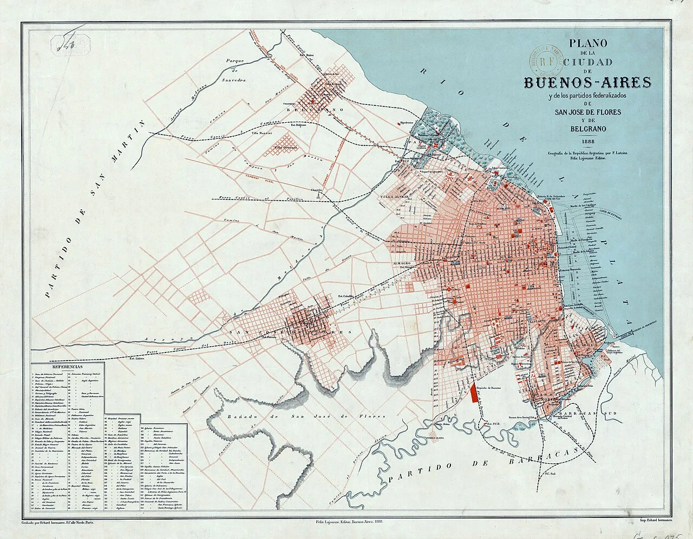
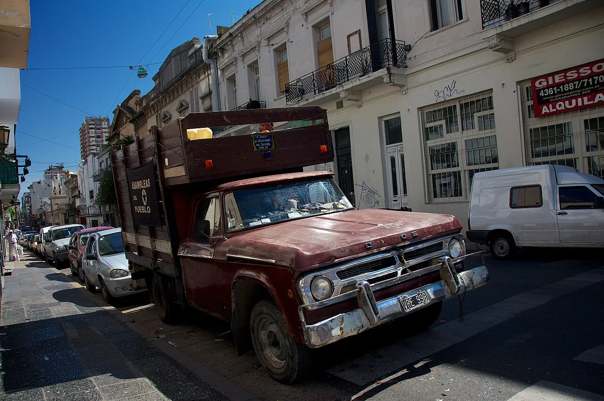

Antes de dibujar una calle, un mapa decide qué cuenta como información. Una línea puede representar una vía, un límite administrativo o una barrera que alguien no cruza. La diferencia depende de la leyenda y del propósito. Presentar un mapa como si fuera el territorio mismo borra esas decisiones de diseño y hace que una selección parezca una descripción completa.
El Manual de mapeo colectivo de Iconoclasistas, publicado por Tinta Limón en 2013 y con una segunda edición en 2015, reúne recursos para construir relatos territoriales de forma colaborativa. Su presentación insiste en la experimentación y en el proceso, antes que en una metodología cerrada. La contribución que interesa aquí es concreta: abrir la elaboración del mapa a conocimientos que un plano convencional puede no recoger. [1]
Una pieza permite bajar esa idea al suelo. República tóxica registra zonas de monocultivo de soja transgénica y efectos sociales y ambientales en cinco países. Iconoclasistas explica que surgió de un taller en Asunción con investigadores, activistas y redes de agroecología. La selección de datos y el alcance regional son decisiones editoriales: hacen visible una continuidad que se perdería si cada país se mirara aislado. El mapa se consulta en el archivo de sus autores; aquí no lo reproducimos. [3]
El plano de Buenos Aires de 1888 reproducido en este artículo permite mirar otra tarea cartográfica. El dibujo organiza una ciudad mediante trazados, límites y referencias seleccionadas. Su condición histórica no lo vuelve una ventana transparente al pasado: también tuvo destinatarios y un propósito. Compararlo con la propuesta de un taller colectivo sirve para discutir qué pregunta responde cada documento, sin exigir que ambos hagan el mismo trabajo. [2]


Una leyenda es una pequeña arquitectura de clasificación. Agrupa experiencias distintas bajo un mismo signo y separa otras que podrían parecer próximas. Si una categoría resulta demasiado amplia, pierde diferencias relevantes; si se multiplica sin criterio, impide leer relaciones. El trabajo gráfico consiste en encontrar una escala de distinción útil y en hacer explícito qué no cabe todavía dentro de ella.
En un proceso participativo, la discusión empieza antes de escoger colores. Hay que definir quién puede proponer categorías, quién valida un registro y cómo se conserva un desacuerdo. Reunir personas alrededor de una mesa no garantiza que todas intervengan con la misma facilidad. La duración del encuentro, el lenguaje de las instrucciones y la forma de registrar las aportaciones también distribuyen capacidad de decisión.
El manual propone herramientas, no demuestra por sí solo los resultados de cada aplicación. Para valorar un taller concreto harían falta sus registros: participantes, criterios, cambios y usos posteriores. Una fotografía de una mesa llena de papeles puede mostrar actividad, pero no acredita consenso. Esta distinción evita que la estética de la participación sustituya la documentación de lo que realmente se decidió.
La segunda imagen muestra una calle de Buenos Aires y un vehículo. Sirve para recordar cuánto queda fuera de cualquier representación inmóvil: desplazamientos, horarios y usos superpuestos. No es una prueba sobre un barrio específico ni un trabajo de Iconoclasistas. Un mapa puede incorporar información temporal, pero tiene que decidir cómo hacerlo legible sin confundir una observación puntual con una condición permanente.

.jpg){kind=link}
También hay información que no debería hacerse pública por defecto. Localizar personas, conflictos o recursos sensibles puede producir riesgos para quienes aportaron el conocimiento. Una práctica responsable debe acordar qué se comparte, con quién y a qué resolución. La precisión cartográfica tiene valor cuando sirve al propósito del proyecto; publicar una coordenada exacta no es siempre una mejora.
La utilidad puede continuar después del dibujo. Un mapa permite comparar relatos, detectar preguntas pendientes o preparar un recorrido, siempre que conserve fecha y procedencia de sus registros. Si nadie puede corregirlo, puede endurecer una interpretación inicial y convertirla en autoridad. El soporte visual necesita una forma de revisión, aunque sea tan sencilla como guardar versiones y explicar qué cambió.
El aporte del mapeo colectivo está en hacer discutible la leyenda, no solo en llenar casillas. El mejor resultado no tiene que ser el mapa más denso. Puede hacer visible una diferencia y permitir que otras personas la cuestionen. Representar un territorio también implica dejar sitio para la lectura que aún falta.
Fuentes.
- Iconoclasistas — Manual de mapeo colectivo: recursos cartográficos críticos para procesos territoriales de creación colaborativa
- Bibliothèque nationale de France / Wikimedia Commons — plano de Buenos Aires de Francisco Latzina, 1888
- Iconoclasistas — República tóxica, 2020. Objeto cartográfico, alcance territorial y contexto del taller de Asunción de 2019.
Lectura documental del manual y de un plano histórico. No se realizó un taller ni se presenta ningún mapa como resultado de participación propia. Las imágenes no son trabajos de Iconoclasistas.
Fuentes consultadas el 19.11.2026. Análisis e interpretación: RUMMOR. Edición privada para revisión.